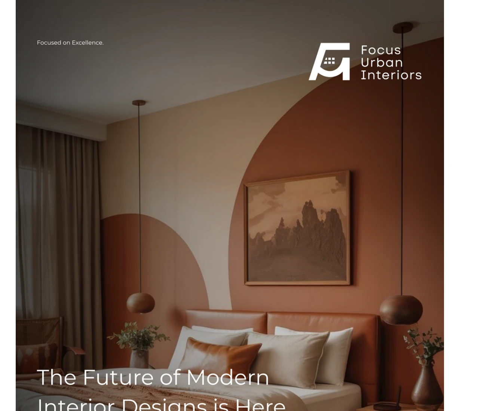
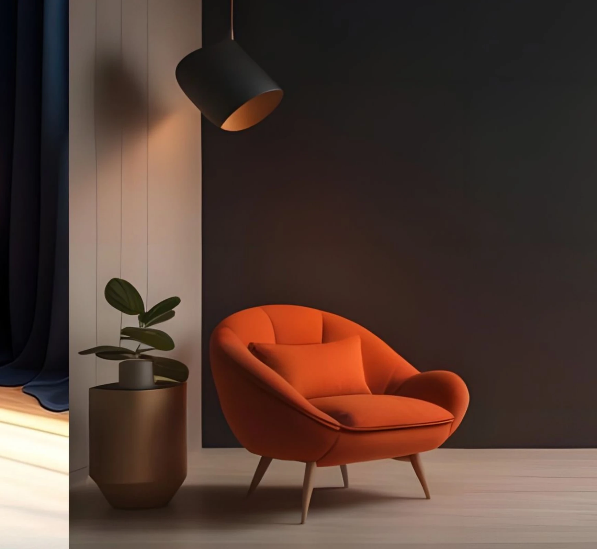
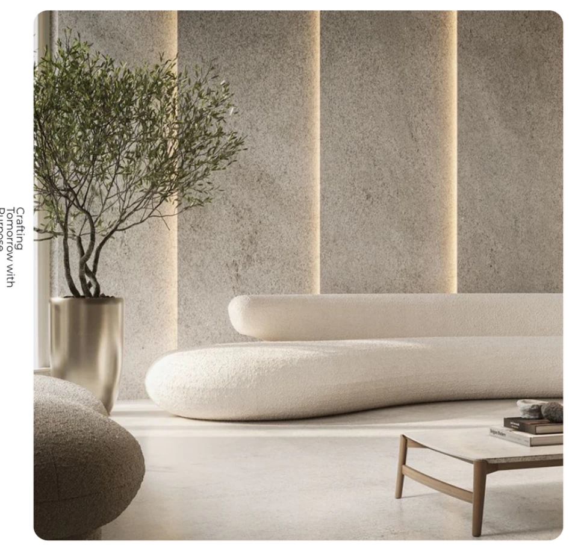
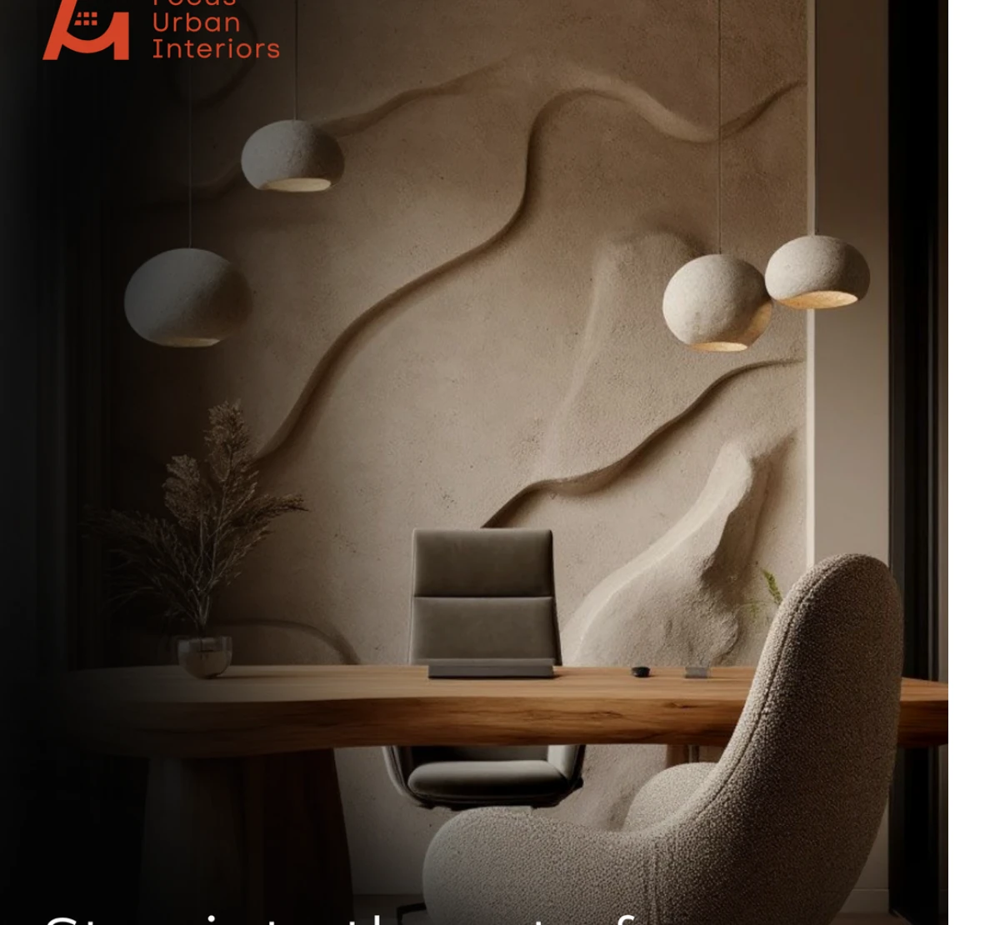
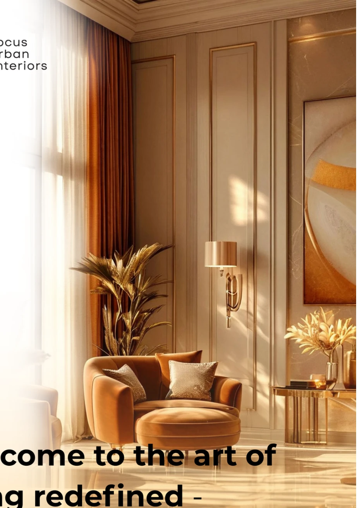
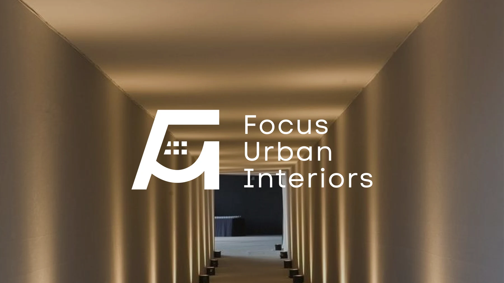
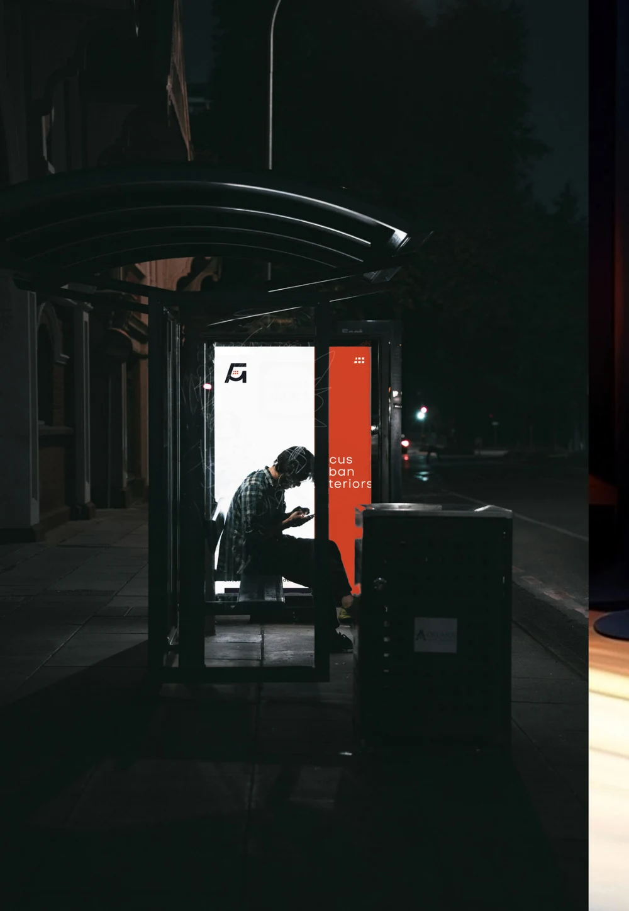

↗
Interior Architecture · LagosEst. 2025
Designed for comfort. Crafted for living.
Spaces with soul.
Designed with purpose.
We shape refined residential and commercial interiors around the way people live, work and feel.
Scroll to discover↓
01 · Studio philosophy
We believe the most luxurious spaces are not only seen — they are felt.
Focus Urban Interiors is a Lagos-based design studio creating elegant, functional and timeless environments for homes, hospitality and contemporary workplaces.
Our process balances architectural precision with warmth, translating each client’s lifestyle into materials, light, proportion and detail.
360°Design to delivery
02 · Selected work
Spaces, considered.

↗
↗
↗03 · Expertise
From first line to final layer.
One integrated studio, guiding every decision from spatial concept to installation.
Residential Interiors · Commercial Spaces · Hospitality Design · Turnkey Projects · Interior Styling · Space Planning · Residential Interiors · Commercial Spaces · Hospitality Design · Turnkey Projects · Interior Styling · Space Planning ·
Precision at every stage
Built around you
A complete journey, quietly managed.
From the first conversation to the final reveal, we coordinate creative direction, documentation, procurement and execution with one clear standard.
12+Design disciplines
1Point of contact
100%Tailored
04 · Our process
Clarity from concept to completion.
Consultation
We listen closely, define your aspirations and establish the project brief.
Concept
Mood, narrative and spatial direction are distilled into one clear idea.
Design
Plans, materials, lighting and furniture are composed with rigorous detail.
Development
Technical drawings, specifications and budgets prepare the vision for reality.
Execution
Our team coordinates artisans, suppliers and site work from start to finish.
Final Reveal
Every element is styled, checked and presented as a complete experience.

“They translated how we wanted to feel into a home that is calm, warm and unmistakably ours.Private residential client · Lagos
05 · Latest insights
The journal.
Why quiet materials create lasting rooms
Read story →
City livingDesigning calm in the rhythm of Lagos
Read story →The new language of warm minimalism
Read story →Begin a project
Let’s create a space you’ll love coming home to.
Tell us about your space, timeline and ambitions. We’ll respond with the right next step for your project.
hello@focusurbaninteriors.com